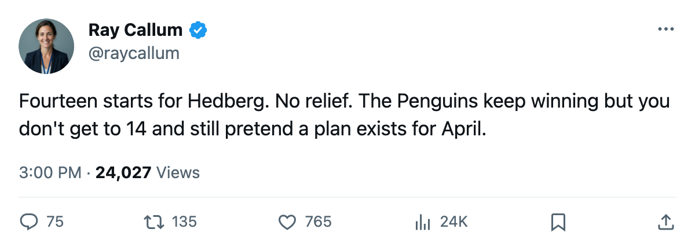

Goalie Watch: Hedberg Has Started All 14, and the Penguins Sit 3rd in the East
Johan Hedberg has not rested. Pittsburgh has won 7 straight and carries 117 injury days on its ledger.
 Ray CallumSenior correspondent · Home Ice Network
Ray CallumSenior correspondent · Home Ice Network
 Johan Hedberg89 has started all 14 games for
Johan Hedberg89 has started all 14 games for  Pittsburgh Penguins. No relief, no day off. The Penguins are 8-2-0, 24 points, 3rd in the East.
Pittsburgh Penguins. No relief, no day off. The Penguins are 8-2-0, 24 points, 3rd in the East.
The workload is the league's heaviest through 14 games, and Hedberg's share sits at 100%.  Nikolai Khabibulin92 at
Nikolai Khabibulin92 at  Tampa Bay Lightning and
Tampa Bay Lightning and  Roman Cechmanek86 at
Roman Cechmanek86 at  Los Angeles Kings have also started all their games (16 each), but neither club sits in the top four. No team with a 100% starter has more wins than Pittsburgh.
Los Angeles Kings have also started all their games (16 each), but neither club sits in the top four. No team with a 100% starter has more wins than Pittsburgh.
The Penguins have won 7 straight. They scored 4 at Tampa Bay Lightning on November 8 and 4 at  Carolina Hurricanes on November 9. Their home record reads 6-1-0 and their road record reads 6-1-0. They lose only to
Carolina Hurricanes on November 9. Their home record reads 6-1-0 and their road record reads 6-1-0. They lose only to  New Jersey Devils and
New Jersey Devils and  New York Rangers, and the Rangers' loss came in overtime.
New York Rangers, and the Rangers' loss came in overtime.
The medical ledger underneath
Pittsburgh carries 16 injury spells and 117 days lost this season, the third-highest total in the league.  Brad Chartrand76 is out with an ankle until November 23.
Brad Chartrand76 is out with an ankle until November 23.  Mikael Renberg76 is out with an ankle, targeted for November 14. Rico Fata73 is out with an abdomen until January 12. The team has lost 3 players to the injured list since the last edition, and Hedberg has not missed a start through any of it.
Mikael Renberg76 is out with an ankle, targeted for November 14. Rico Fata73 is out with an abdomen until January 12. The team has lost 3 players to the injured list since the last edition, and Hedberg has not missed a start through any of it.
GM Eric Lippmann addressed the roster depth and the building situation on The Tunnel this week. "I'm not going to sit here and pretend we've solved anything," he said after a win, on the streak and the health of the lineup.
Hedberg turns 33 in February. The Penguins open the week at  Minnesota Wild on November 14, then host
Minnesota Wild on November 14, then host  New York Islanders on November 16, then visit
New York Islanders on November 16, then visit  Montreal Canadiens on November 18. That is 3 games in 5 days, and no one on the coaching staff has suggested the crease will change hands.
Montreal Canadiens on November 18. That is 3 games in 5 days, and no one on the coaching staff has suggested the crease will change hands.
The East table has New York Rangers at 28 points and  Toronto Maple Leafs at 26, both ahead of Pittsburgh's 24. But the Rangers have played 18 games and Toronto has played 16. Pittsburgh's 14 games leave room. They just need someone other than Hedberg to take a shift.
Toronto Maple Leafs at 26, both ahead of Pittsburgh's 24. But the Rangers have played 18 games and Toronto has played 16. Pittsburgh's 14 games leave room. They just need someone other than Hedberg to take a shift.
